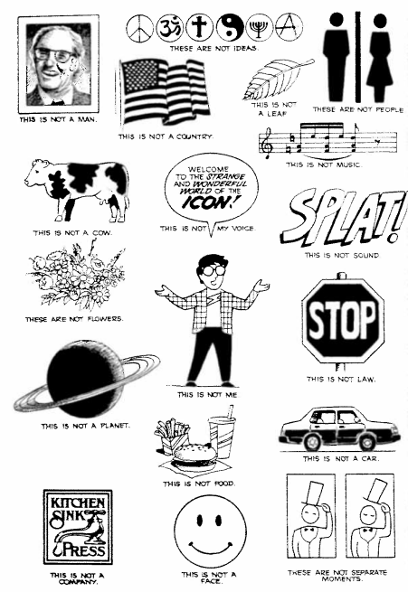

Undestanding Comics Response

Icons have the power to represent thoughts, ideas, brands with out much effort. It maybe as simple as a word but it has the ability to represent much more. Something as simple as color is enough to represent an emotion or idea. They can represent anything without the thing being explicit. Icons could represent...
Companies
Sound
People
Orginizations
Movments
Direction
Creaters often keep their drawings or icons simple so the viewers can access the messages easier. Instead of paying their attention to the medium, the viewers will then give their attention to the message the medium is trying to convey